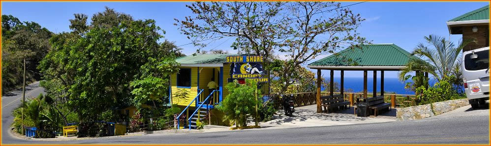

Ubicacion
Esta es la pagina de Ubicacion

South Shore Canopy Tours se encuentra en el extremo suroeste de la isla de Roatán, cerca de la mayoría de las atracciones turísticas, playas divertidas,
varios restaurantes y bares, y varios resorts y propiedades de condominios de lujo. Se encuentra a solo 5 minutos de West End y West Bay.
Si nos visita desde el crucero, le recomendamos que compre uno de nuestros paquetes turísticos en nuestras cabinas de muelle de cruceros.
Nuestro personal estará listo para saludarlo y comenzar su divertida tirolesa de Roatán y caminata ecológica por la selva.
Nuestro tour de tirolesa de Roatán y las pasarelas ecológicas con 8 puentes colgantes se encuentran en 28 acres de exuberante vegetación de
la isla tropical de Roatán llena de vida silvestre exótica y hermosas palmeras de la isla, árboles frutales y de nueces,
y el famoso árbol Gumbalimba que se balancea suavemente a medida que fluye la brisa del Caribe occidental. Desde el comienzo en
la plataforma de lanzamiento Zip o Walkways, hasta el último puente oscilante, un nuevo mundo se desarrollará a medida que te deslizas a
través de este ecosistema natural.
¡Únase a los miles que han experimentado la emoción de nuestras aventuras en South Shore
Canopy y Eco Park junto con nuestro entusiasta
personal y agregue Miles of Smiles a su destino de vacaciones! ¡Haga su reserva hoy!